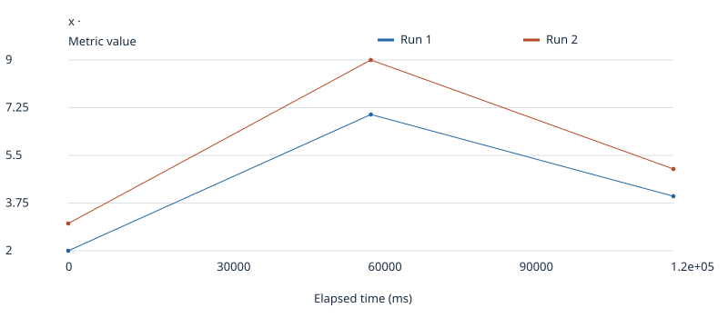
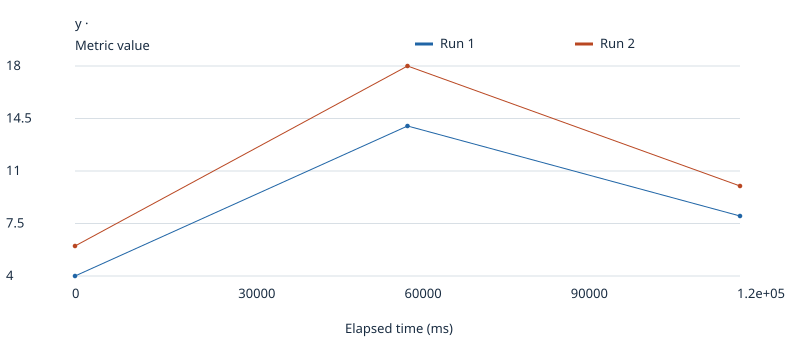
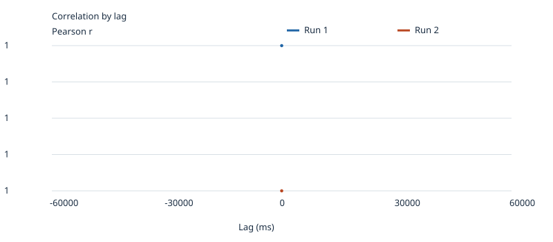

<!doctype html>
<html lang="en"><meta charset="utf-8"><title>Run comparison</title>
<style>body{font:16px system-ui;max-width:54rem;margin:2rem auto;padding:0 1rem}
table{border-collapse:collapse;margin:1rem 0}td,th{border:1px solid #bbb;padding:.35rem .65rem}
img{max-width:100%}figure{margin:2rem 0}</style><main>
<h1>Run comparison</h1><a href="analysis.json">Download numerical results</a>
<h2>Run 1</h2>
<p><a href="run1.json">prometheus queue depth</a></p>
<table><thead><tr><th scope="col">Dashboard</th><th scope="col">Panel</th><th scope="col">From (Unix ms)</th><th scope="col">To (Unix ms)</th></tr></thead><tbody><tr><td>stores</td><td>11</td><td>1704067200000</td><td>1704067320000</td></tr></tbody></table>
<table><thead><tr><th scope="col">Query</th><th scope="col">Export status</th></tr></thead><tbody><tr><td>B</td><td>error</td></tr></tbody></table>
<table><thead><tr><th scope="col">Stage</th><th scope="col">Metric</th><th scope="col">Mean</th><th scope="col">Min</th><th scope="col">Max</th><th scope="col">Observed</th><th scope="col">Expected</th></tr></thead><tbody><tr><td>window</td><td>x</td><td>4.33333</td><td>2</td><td>7</td><td>3</td><td>3</td></tr><tr><td>window</td><td>y</td><td>8.66667</td><td>4</td><td>14</td><td>3</td><td>3</td></tr></tbody></table>
<table><thead><tr><th scope="col">Lag status</th><th scope="col">Lag (ms)</th><th scope="col">Pearson r</th><th scope="col">Paired observations</th></tr></thead><tbody><tr><td>ok</td><td>0</td><td>1</td><td>3</td></tr></tbody></table>
<h2>Run 2</h2>
<p><a href="run2.json">influx queue depth</a></p>
<table><thead><tr><th scope="col">Dashboard</th><th scope="col">Panel</th><th scope="col">From (Unix ms)</th><th scope="col">To (Unix ms)</th></tr></thead><tbody><tr><td>stores</td><td>12</td><td>1704067200000</td><td>1704067320000</td></tr></tbody></table>
<table><thead><tr><th scope="col">Query</th><th scope="col">Export status</th></tr></thead><tbody><tr><td>B</td><td>error</td></tr></tbody></table>
<table><thead><tr><th scope="col">Stage</th><th scope="col">Metric</th><th scope="col">Mean</th><th scope="col">Min</th><th scope="col">Max</th><th scope="col">Observed</th><th scope="col">Expected</th></tr></thead><tbody><tr><td>window</td><td>x</td><td>5.66667</td><td>3</td><td>9</td><td>3</td><td>3</td></tr><tr><td>window</td><td>y</td><td>11.3333</td><td>6</td><td>18</td><td>3</td><td>3</td></tr></tbody></table>
<table><thead><tr><th scope="col">Lag status</th><th scope="col">Lag (ms)</th><th scope="col">Pearson r</th><th scope="col">Paired observations</th></tr></thead><tbody><tr><td>ok</td><td>0</td><td>1</td><td>3</td></tr></tbody></table>
<h2>Mean change from run 1 to run 2</h2>
<table><thead><tr><th scope="col">Stage</th><th scope="col">Change in x</th><th scope="col">Change in y</th></tr></thead><tbody><tr><td>window</td><td>1.33333</td><td>2.66667</td></tr></tbody></table>
<figure><figcaption>Metric x by elapsed time</figcaption></figure>
<figure><figcaption>Metric y by elapsed time</figcaption></figure>
<figure><figcaption>Correlation by lag</figcaption></figure></main></html>
